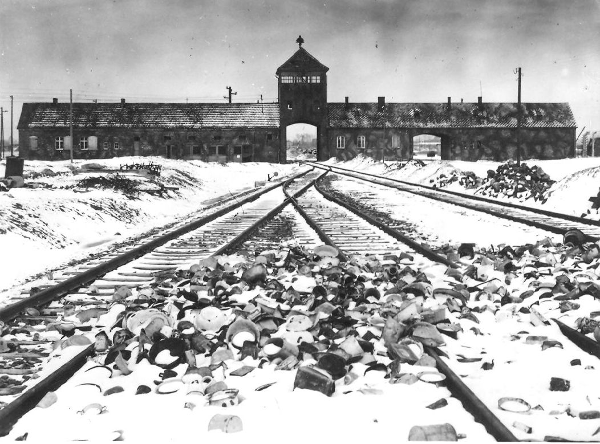
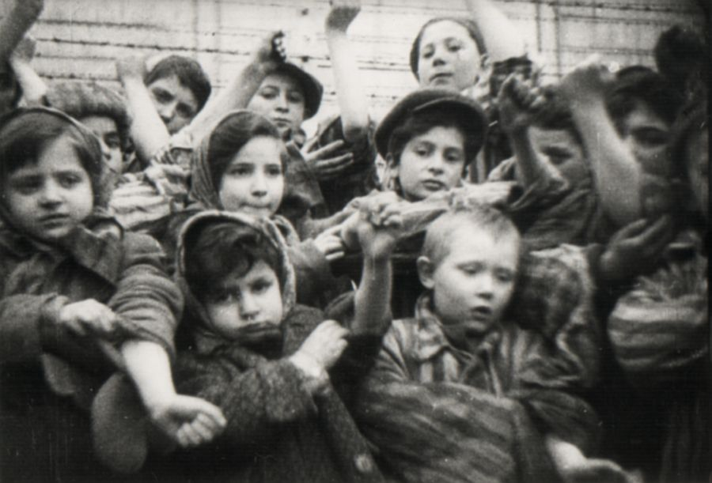
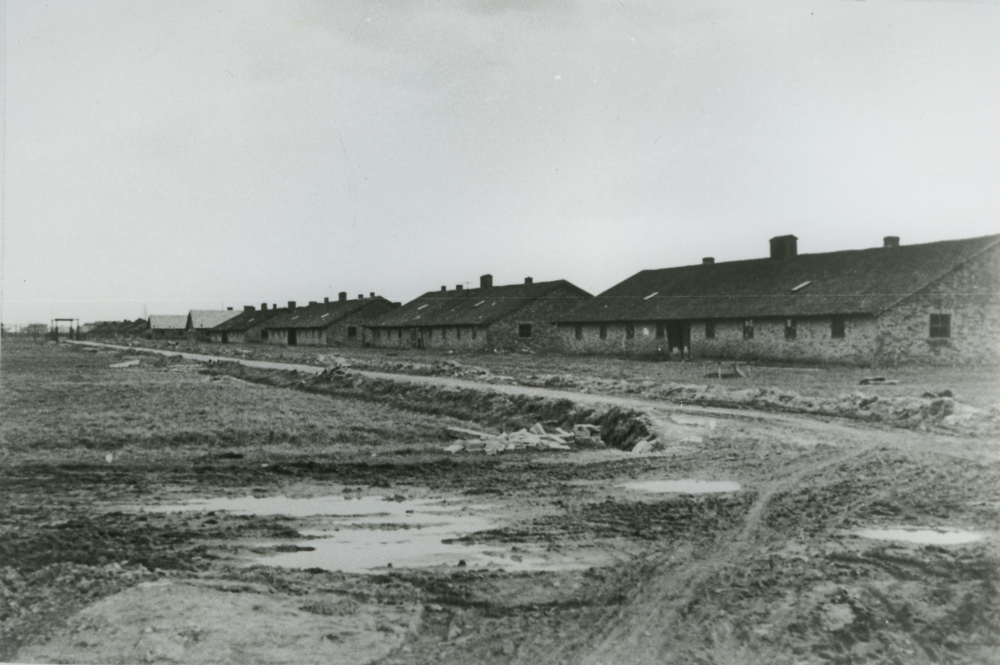
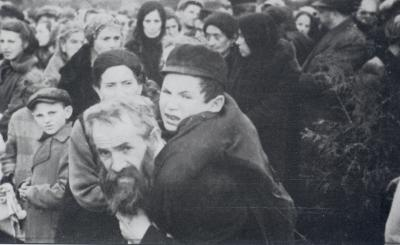
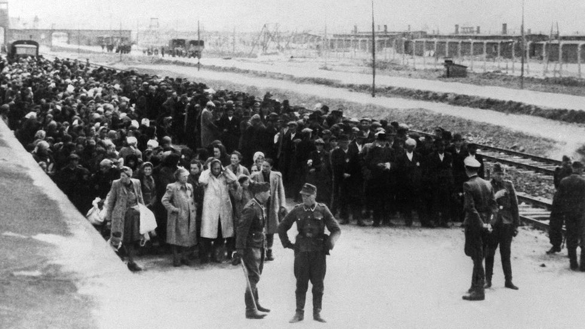
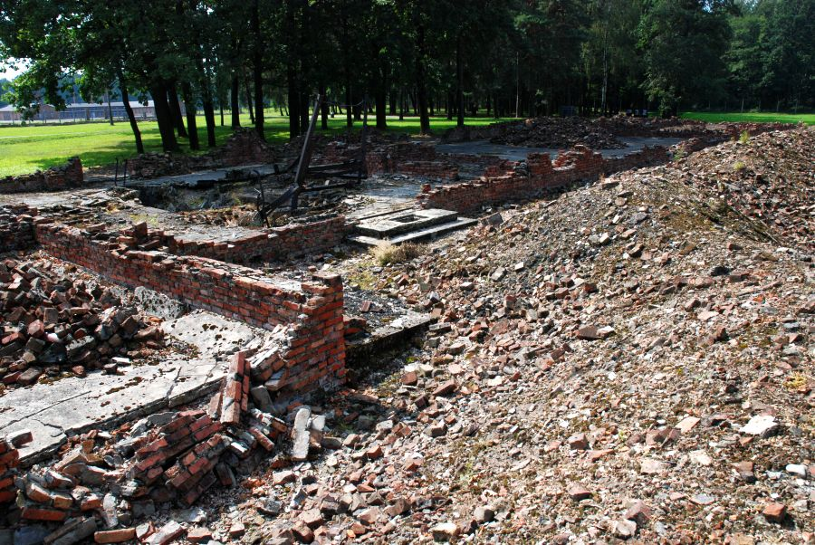
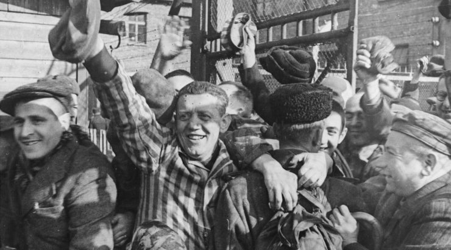

All over the world, Auschwitz has become a symbol of terror, genocide, and the Holocaust. It was established by Germans in 1940, in the suburbs of Oswiecim, a Polish city that was annexed to the Third Reich by the Nazis. Its name was changed to Auschwitz, which also became the name of Konzentrationslager Auschwitz.
The second part of the division of Auschwitz concentration camp was the Birkenau camp (which held over 90,000 prisoners in 1944), also known as "Auschwitz II" This was the largest part of the Auschwitz complex. The Nazis began building it in 1941 on the site of the village of Brzezinka, three kilometers from Oswiecim. The Polish civilian population was evicted and their houses confiscated and demolished. The greater part of the apparatus of mass extermination was built in Birkenau and the majority of the victims were murdered here.
Source:www.haaretz.com
Block 31 at the family camp was the children’s block. Since generally, children were sent to their deaths upon arrival at Auschwitz, it was very unusual to see children at the camp.
On the basis of the partially preserved camp records and estimates, it has been established that there were approximately 232 thousand children and young people up to the age of 18 among the 1.3 million or more people deported to the Auschwitz-Birkenau camp.
This figure includes about 216 thousand Jews, 11 thousand Gypsies, at least 3 thousand Poles, over 1 thousand Byelorussians, and significant numbers of Russians, Ukrainians, and others. The majority of them were deported to Auschwitz along with their parents in various campaigns directed against whole ethnic or social groups. Slightly more than 23.5 thousand children and young people were registered in the camp, out of the total of 400 thousand registered prisoners.
Source:Auschwitz-Birkenau Memorial & Museum
In the Book of Block 22B female prisoners residing in barrack 22 in sector BIb of the women’s camp in Birkenau were recorded alphabetically by a female prisoner of an unknown name, employed as a recorder of this block.
On 24 November 1944 the prisoners from the women’s camp, located in sectors BIb and BIa in Birkenau were transferred in the following way: those who were healthy went to sector BIIb (former Terezin family camp), the sick ones to BIIe (former camp for Gypsies), and some to the extension of the camp (Lagererweiterung) in Auschwitz. Probably most of the prisoners from block 22, recorded in the Book of Block 22, were transferred to the block in sector BIIb. Some ended up in the hospital in section BIIe. Some were placed in KL Auschwitz.
In many entries there is a triangle (a wedge) drawn next to the information about nationality, the colour of which corresponds to the colour of the triangle worn on the striped uniform next to the camp number. The separate colours represent corresponding prisoner categories, e.g. red – political prisoner, black – antisocial prisoner, green – criminal prisoner. The last column, “Remarks”, contains the date and place of the transfer from block 22. The writer noted there, for example, the prisoner’s transfer to the penal unit (SK).
Source:Auschwitz-Birkenau Memorial & Museum
In September 1943 five thousand prisoners were deported from the Terezín ghetto to Auschwitz-Birkenau in two transports.Unlike previous transports, they received unusual „privileges“: on arriving at the camp they did not undergo the usual selections, and families were also not divided up into various sections in the camp - hence the „family“ camp. The „privileges“ also included the fact that the Terezín prisoners were not subjected to the humiliating ritual of having their heads shaved on arrival, and that children were allowed to spend daytimes in a children's block. In December 1943 and May 1944, further large transports from Terezín brought a further 12,500 prisoners, who were placed in the family camp. While the first transports consisted exclusively of prisoners who had come to Terezín from the Czech lands, almost half the prisoners on later transports were Jews who had initially been deported from Germany, Austria and the Netherlands.
In the family camp, labelled section BIIb in Birkenau, the prisoners had to live in a narrow, muddy strip surrounded by an electric fence. They suffered from hunger, cold, exhaustion, illnesses and poor sanitation. The mortality rate was no lower here than in the rest of Auschwitz.
The liquidation of the family camp on 8 March and 10-12 July 1944 was the largest mass murder of Czechoslovak citizens during the Second World War.
Source: www.holocaust.cz
Selections of mass Jewish transports took place on three railroad unloading platforms, or ramps. SS doctors made most of the decisions about who was qualified for labor, and who was killed immediately.
The third ramp was built from 1943 inside the Birkenau camp, and went into operation in May 1944 in connection with the anticipated arrival of transports of Hungarian Jews. The railroad spur along this ramp ran as far as gas chambers and crematoria II and III. Aside from the 430 thousand Hungarian Jews, 67 thousand Jews from the Łódź ghetto and some of the transports from the ghetto in Terezin and from Slovakia were unloaded at this ramp. From this point on, mass selections of Jews took place inside the camp, before the eyes of thousands of prisoners. Transports of Poles from Warsaw during the Uprising there, sent to Auschwitz by way of the transit camp in Pruszków, were also unloaded here.
Source: Auschwitz-Birkenau Memorial & Museum
SS men escorted the men, women, and children selected for death to the gas chambers—initially to the gas chamber in crematorium I and “bunkers” 1 and 2, and, from the spring of 1943, to the gas chambers in crematoria II, III, IV, and V.
After they were killed, Sonderkommando prisoners dragged the corpses out of the gas chambers. They cut off the women’s hair and removed all metal dental work and jewelry. Then they burned the corpses in pits, on pyres, or in the crematorium furnaces. (Until September 1942, some of the corpses were buried in mass graves; these corpses were burned from September to November 1942.)
Bones that did not burn completely were ground to powder with pestles and then dumped, along with the ashes, in the rivers Soła and Vistula and in nearby ponds, or strewn in the fields as fertilizer, or used as landfill on uneven ground and in marshes.
As part of the overall liquidation of the evidence of crime, all crematoriums and gas chambers were dismantled - II, III and V blown up, IV burned down - before the liberation of the camp.
Source: Auschwitz-Birkenau Memorial & Museum
Soldiers of the 60th Army of the First Ukrainian Front opened the gates of Auschwitz Concentration Camp on January 27, 1945. The prisoners greeted them as authentic liberators. It was a paradox of history that soldiers formally representing Stalinist totalitarianism brought freedom to the prisoners of Nazi totalitarianism.
The Red Army obtained detailed information about Auschwitz only after the liberation of Cracow, and was therefore unable to reach the gates of Auschwitz before January 27, 1945.
About 7 thousand prisoners awaited liberation in the Main Camp, Birkenau, and Monowitz. Before and soon after January 27, Soviet soldiers liberated about 500 prisoners in the Auschwitz sub-camps in Stara Kuźnia, Blachownia Śląska, Świętochłowice, Wesoła, Libiąż, Jawiszowice, and Jaworzno.
Over 230 Soviet soldiers, including the commander of the 472nd regiment, Col. Siemen Lvovich Besprozvanny, died in combat while liberating the Main Camp, Birkenau, Monowitz, and the city of Oświęcim. The majority of them are buried at the municipal cemetery in Oświęcim.
In the Main Camp and Birkenau, Soviet soldiers discovered the corpses of about 600 prisoners who had been shot by the withdrawing SS or who had succumbed to exhaustion.
Source: Auschwitz-Birkenau Memorial & Museum